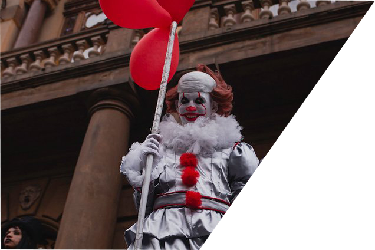
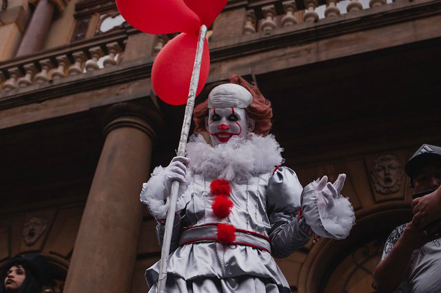
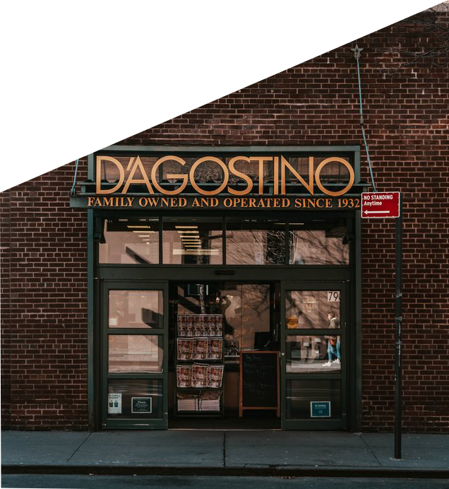
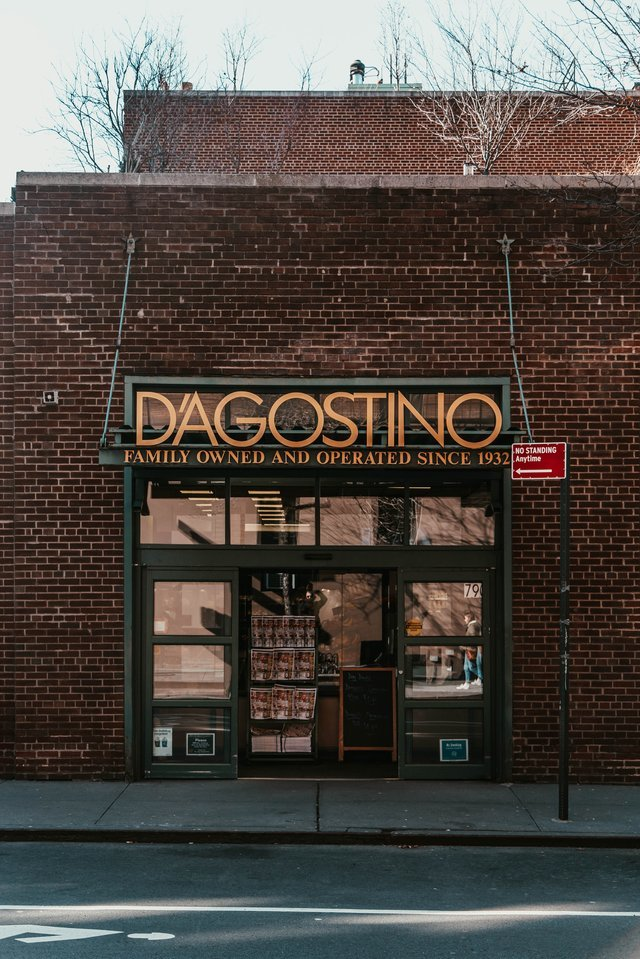
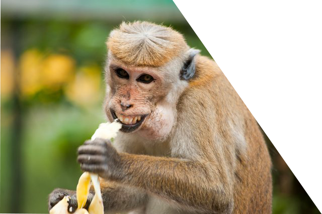
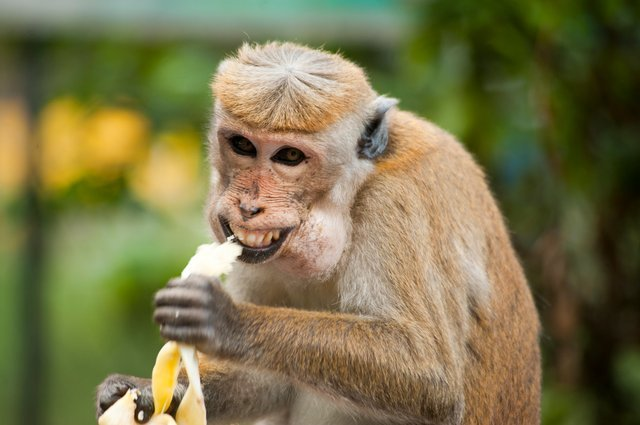

Wie hat es alles angefangen
Alles begann, als unser Herr und Retter, das
fliegende Spaghetti-Monster, starb und zur
Hölle kam. Zuerst begann er einen Tag damit,
die Folterkammern zu reinigen, bis er genug
Geld hatte, um ein Restaurant zu eröffnen.
Es war ein Kampf, die Blutflecken von den
Wänden zu schrubben, aber unser Herr gab
nie nach. Tag für Tag hörte er nur Schrubbergeräusche, gefolgt von widerhallenden
Schreien der gefolterten Seelen.


Der Tag, an dem der Traum wahr wurde
Nach Tausenden von Jahren konnte das fliegende Spaghetti-Monster
endlich genug Geld verdienen, um ein Restaurant zu eröffnen.
Glück erfüllte die Seele des fliegenden Spaghetti-Monsters.
Aber ohne sein Wissen lauerte ein Teufel herum. Mr. Spaghetti
so glücklich zu sehen, verärgerte den Teufel. Niemand darf
in der Hölle glücklich sein und als solcher hat der Teufel
beschlossen, etwas dagegen zu unternehmen.
Stammgäste waren Prominente
Alles lief großartig. Das Restaurant hatte ein stabiles Einkommen.
In den Restaurants des Spaghetty-Monsters aßen sogar einige Prominente
der Hölle regelmäßig in seinem Restaurant wie Hit * er, Elisabeth Bathory und Count Dracula.
Das einzige Essen, das das Restaurant servierte, waren Würmer, die wie Spaghetti aussehen.
Das Restaurant war zu dieser Zeit in der Hölle sehr angesagt. #Wormspag war der am
zweithäufigsten verwendete Hashtag im berühmten asozialen Netzwerk von Tötter.


Die Gründung der Anwaltskanzlei Mustermann & Musterfrau
Der Teufel suchte nach einer Möglichkeit, das Spaghetti-Monster
unglücklich zu machen. Er fand heraus, dass das fliegende
Spaghetti-Monster einige geringfügige Rechtsverletzungen
in der Art und Weise begangen hatte, wie er sein Restaurant
führte. Das Spaghetti-Monster war sich dessen natürlich
nicht bewusst. Der Teufel verklagte daraufhin das fliegende
Spaghetti-Monster und gewann natürlich auch vor Gericht.
Das Restaurant der fliegenden Spaghetti-Monster musste
schließen und er musste das Gebäude verkaufen, um die
Geldstrafe zu bezahlen. Dies führte dazu, dass das
fliegende Spaghetti-Monster verzweifelt wurde, was
den Teufel sehr glücklich machte. Der Name des
Teufels war Herr Mustermann. Diese Art, Menschen
zu ruinieren, brachte ihm überwältigende Freude
und finanzielle Vorteile, und so beschloss er,
es zu seinem Job zu machen. Das ehemalige Restaurant
wurde von Herrn Mustermann gekauft und in die erste
Anwaltskanzlei der Hölle umgewandelt.